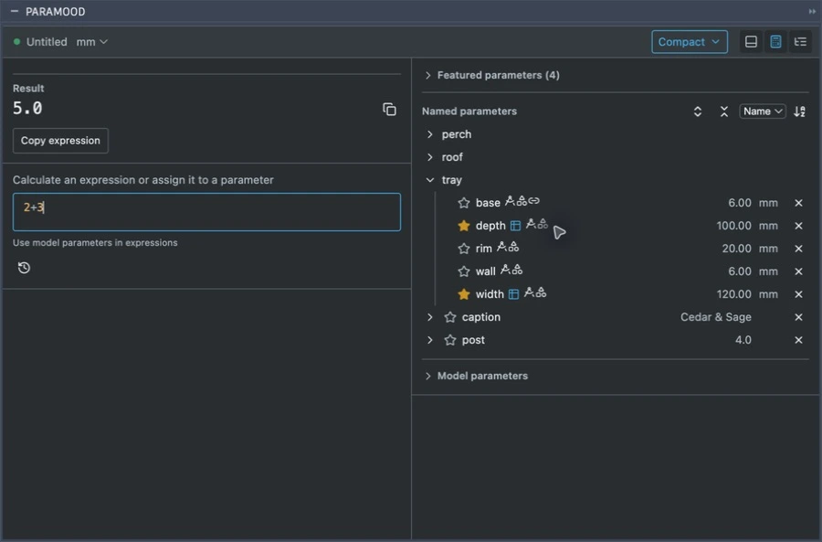

Paramood
Меняйте размеры модели прямо в палитре Fusion. Введите несколько параметров и формул сразу, проверьте расчёт и примените изменения. Соберите параметры в дерево групп и сохраните типоразмеры как варианты одной модели.